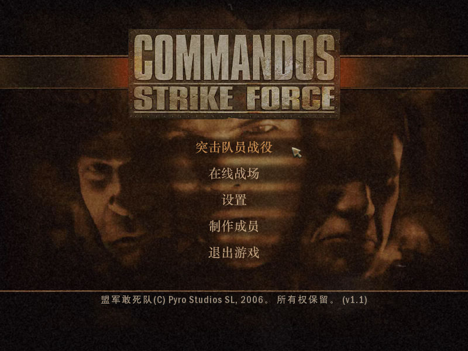
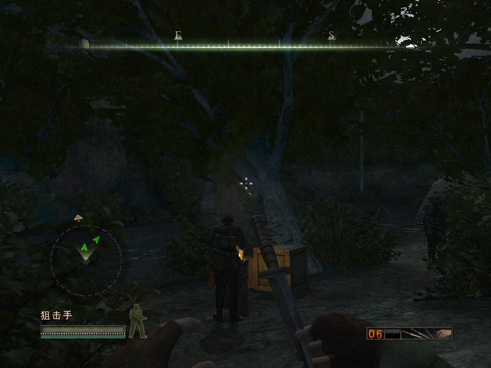

名稱：魔鬼戰將4／盟軍敢死隊4：絕地戰線／打擊力量 (Commandos: Strike Force，簡中／英文版)
簡介：Pyro 2006年出品的第一人稱射擊遊戲，由Eidos代理發行，大陸由娛樂通簡中化並代
理發行。本作已不同於前作的即時動作戰術遊戲形態 [待補]。


保護：英文版為光碟SecuROM 7.21
簡中版為光碟StarForce 3.07（序號：RW83C-76PNL-V5CG5-A7GXP-E3YGW）
備註：英文版非安裝者，必須進行下列Registry註冊（假設安裝目錄在C:\cmdos4）：
[HKEY_CURRENT_USER\Software\pyro studios\Commandos Strike Force\Game]
[HKEY_CURRENT_USER\Software\WOW6432Node\pyro studios\Commandos Strike Force\Game]
"Language"=dword:0000000c
"Exe"="C:\\cmdos4\\CommXPC.exe"
"Path"="C:\\cmdos4"
"Scan"=dword:00000000
備註：簡中版安裝完為1.1版。
備註：簡中版在VirtualBox無法顯示中文字，請使用VMware+簡中系統。記得修改vmx檔加入：
monitor_control.restrict_backdoor = "TRUE"
檔案：csf_patch_v1.2s.rar = 英文1.2更新檔（簡中版無法使用）
nocd12.rar = 英文1.2免光碟檔（簡中版無法使用）
nocd_chs.rar = 簡中免光碟檔（會被報毒，請自行斟酌）